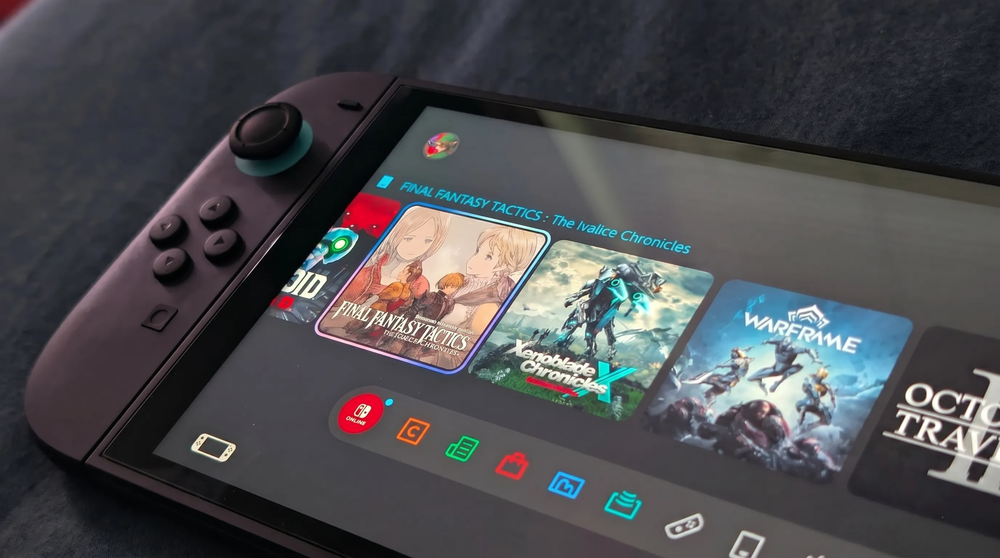

Nintendo Direct June 9, 2026 Confirmed by Jeff Grubb: Zelda Ocarina of Time Remake "Increasingly Likely," Every Rumored Game Ranked by Credibility

Jeff Grubb (Giant Bomb / Game Mess) stated on his podcast on June 2, 2026: "I've heard Tuesday, next Tuesday... I would specifically say Tuesday morning." He noted it could slip to Wednesday depending on time zone logistics, but June 9 is the date he keeps hearing. NateTheHate independently confirmed on June 3, 2026 that a Nintendo Direct is happening next week. This article will be updated as new information emerges before the event.
Summer Game Fest 2026 has already delivered a PlayStation State of Play, a massive SGF main showcase on June 5, and the Xbox Games Showcase on June 7. Nintendo, as has become its custom, is not a formal partner at SGF — and also as has become its custom, it appears to be waiting until the rest of the industry has cleared the room before walking in with its own presentation. Based on multiple corroborating sources, that moment is June 9, 2026. Five days after the Xbox show. One year to the week after the Nintendo Switch 2 launched. And the presentation, Jeff Grubb says, will be a full-scale general Nintendo Direct — the first proper one since the Switch 2 arrived on shelves.
Key Takeaways
- Date: Tuesday, June 9, 2026 — confirmed by Jeff Grubb and NateTheHate independently; Nash Weedle hinted at the date days earlier using coded imagery
- Format: Full general Nintendo Direct — NOT a Partner Showcase or themed mini-Direct, according to Grubb
- Anchor rumour: Zelda: Ocarina of Time Remake for Switch 2 — NateTheHate's stated holiday 2026 target; Grubb calls it "increasingly likely"
- Other top rumours: New 3D Mario first reveal (releases 2027 per Nate), Star Fox 2 deeper look, Fire Emblem: Fortune's Weave date, Red Dead Redemption 2 port
- Context: Nintendo's first full general Direct since Switch 2 launched; comes after Nintendo's price increase drew heavy criticism worldwide
- How to watch: Nintendo's official YouTube channel — expected morning PT broadcast June 9
Table of Contents
- The Sources: Why Grubb + NateTheHate Together Is Significant
- SGF 2026 Week — How the Nintendo Direct Fits the Calendar
- Why This Is Nintendo's Most Important Direct in 12 Months
- Zelda: Ocarina of Time Remake — How Credible Is This?
- New 3D Mario — The Reveal We've Waited 8 Years For
- Every Rumored Game — Full Credibility-Rated Table
- Games Already Confirmed for Switch 2 (2026)
- The Nintendo Price Controversy: Why This Direct Has Stakes
- How to Watch the Nintendo Direct June 9, 2026
- Frequently Asked Questions
- Conclusion
The Sources: Why Grubb + NateTheHate Together Is Significant
In the Nintendo leaking ecosystem, source credibility matters enormously. Nintendo is one of the most secretive companies in entertainment — genuinely harder to leak from than Disney, and light years harder than PlayStation or Xbox. When multiple independent insiders with different networks converge on the same date, that convergence carries real weight.
The June 9 leak chain works as follows. Spanish insider Nash Weedle was first, hinting at the date days before Grubb's comments by posting imagery referencing Animal Crossing: New Leaf's US release date — June 9, 2013. This is a classic Nintendo insider move: indirection rather than direct statement, plausible deniability built in. Then Jeff Grubb spoke on the June 2 episode of his "Last of the Nintendogs" podcast on his Game Mess YouTube channel. His co-host Mike Minotti was present:
Then on June 3, NateTheHate — who has been accurately predicting Nintendo Direct dates since 2022 with a track record that most outlets simply describe as reliable — added independent confirmation. He did not specify a date precisely, but stated that a presentation is happening "next week," aligning with Grubb's June 9 call.
Three separate sources, no apparent coordination, same week. The pattern is as strong as pre-Direct patterns get without Nintendo itself issuing a press release.
SGF 2026 Week — How the Nintendo Direct Fits the Calendar
Summer Game Fest 2026 has transformed the June gaming calendar into the most information-dense week of the year, and Nintendo's apparent timing places it as a deliberate capstone rather than a competitor. The full SGF 2026 week breakdown:
- June 4 (Wed) PlayStation State of Play — Sony's showcase, including first-party reveals and third-party partnership announcements
- June 5 (Thu) Summer Game Fest Main Show (Geoff Keighley) — the centrepiece, 50+ games, world premieres, multiple publisher segments
- June 7 (Sat) Xbox Games Showcase — Microsoft's annual major showcase for Xbox and Game Pass titles
- June 9 (Tue) Nintendo Direct (Rumored — Morning PT) — Switch 2 anniversary general Direct, the first since the console launched
This structure is not accidental. By letting PlayStation, SGF, and Xbox go first, Nintendo avoids its announcement landing in the noise of a crowded multi-day showcase. It gets its own moment. The games media cycle has mostly processed the SGF week by June 9 — Nintendo enters fresh coverage territory. This has been Nintendo's deliberate strategy since approximately 2023, and the June 9 placement fits the pattern precisely.
Why This Is Nintendo's Most Important Direct in 12 Months
The Nintendo Switch 2 launched on June 5, 2025 — exactly one year before the SGF main show in 2026. In that twelve months, Nintendo has produced a Partner Showcase (which focused on third-party content), a few Nintendo Direct Mini segments, and a Nintendo Direct focused on specific game reveals — but there has been no full-scale general Nintendo Direct of the kind the brand has historically used to comprehensively lay out its next six to twelve months of software.
The gap is felt. While Mario Kart World at Switch 2 launch was critically acclaimed and commercially successful, the broader first-year software pipeline has had visible gaps in major first-party releases. The absence of a new 3D Mario game — it has now been eight years since Super Mario Odyssey — is a running theme in Switch 2 coverage. Third-party support, while improved over the original Switch's later years, has not matched the enthusiasm that a new console generation typically generates.
Added to this is the controversy of Nintendo's price increase. Earlier in 2026, Nintendo raised Switch 2 hardware and software prices in multiple markets — a decision that generated significant negative press coverage and fan frustration worldwide. Nintendo explicitly acknowledged the criticism and stated publicly that the company is committed to a strong software lineup to justify the premium. A major Direct that delivers on that promise is the clearest possible statement of intent.
Zelda: Ocarina of Time Remake — How Credible Is This?
The most eagerly anticipated announcement rumoured for the June 9 Direct is a full remake of The Legend of Zelda: Ocarina of Time. Originally released in 1998 for the Nintendo 64 and widely considered one of the greatest video games ever made, Ocarina of Time has been ported and enhanced multiple times — the 3DS version in 2011 being the most significant revision to date — but has never received the full ground-up remake treatment that would be expected from a modern Switch 2 production.
The source for this rumour is NateTheHate, who stated earlier this year: "In the second half of 2026, approaching the holidays, we are going to receive an Ocarina of Time remake for Switch 2." This is not a hedged hint — it is a direct, specific claim. NateTheHate has earned his credibility through accuracy on Nintendo Direct dates, game announcement timing, and hardware specifications. He does not make loose speculation.
Independently, on his June 2 podcast, Jeff Grubb discussed ongoing rumours and assessed the Ocarina remake as "increasingly likely to be one of Nintendo's major holiday releases." Grubb's framing is notable — he did not say "confirmed," but "increasingly likely" from a source with Grubb's contacts means multiple people with Nintendo proximity are saying the same thing.
The logic of an Ocarina of Time remake as a holiday 2026 anchor is strong even without leaks. Zelda: Breath of the Wild and Tears of the Kingdom both received Switch 2 enhanced editions; Hyrule Warriors: Age of Imprisonment was announced as a winter 2026 release. Ocarina of Time would round out a genuinely extraordinary Zelda year and provide a major "must-buy" gift season title that leverages both Switch 2 hardware capabilities and the nostalgic pull of the franchise's most beloved entry.
New 3D Mario — The Reveal We've Waited 8 Years For
Super Mario Odyssey launched on October 27, 2017. The next proper 3D Mario game — not a remake, not a port, but a new entry — has still not arrived. This is an extraordinary gap for Nintendo's most important franchise, and it has persisted into the Switch 2 era without resolution.
NateTheHate's claim in this space is slightly different from the Ocarina situation: "The next 3D Mario will be released in 2027." If this is accurate, then what the June 9 Direct can reasonably deliver is the first official reveal of the game — not a release, but a title, a trailer, and possibly a 2027 window. For context: Super Mario Odyssey was revealed at a Nintendo Switch presentation in January 2017, nine months before its October release. A June 2026 reveal for a 2027 game fits that same rhythm perfectly.
A new 3D Mario reveal — even without a launch date — would be arguably the single most important piece of news Nintendo could deliver for its long-term platform health. It signals confidence in Switch 2's future and gives core Nintendo fans a concrete reason to maintain engagement through 2026 into 2027.
Every Rumored Game — Full Credibility-Rated Table
| Game / Announcement | Type | Source | Credibility | Expected Timing |
|---|---|---|---|---|
| Zelda: Ocarina of Time Remake | Full remake | NateTheHate + Jeff Grubb | 🟢 Very High | Reveal + Holiday 2026 release window |
| New 3D Mario (title unknown) | New first-party | NateTheHate | 🟢 High | First reveal — 2027 release per Nate |
| Star Fox 2 (second game) | New entry | Multiple sources; Star Fox Switch 2 confirmed | 🟢 High | Deeper look / release date |
| Fire Emblem: Fortune's Weave | Previously announced | Nintendo (officially in pipeline) | 🟢 Very High | Release date announcement |
| Red Dead Redemption 2 (Switch 2 port) | Third-party port | Insider rumour circuit | 🟡 Moderate | Possible announcement; no strong sourcing |
| Call of Duty: Modern Warfare 4 update | Third-party / previously announced | Nintendo official (revealed prior) | 🟢 Confirmed presence | Further content / release date details |
| New Switch 2 accessories / colour variants | Hardware | Pattern recognition (Nintendo anniversary practice) | 🟡 Moderate | Possible — Nintendo often announces hardware variants at year-one events |
| Donkey Kong 64 / Switch Online additions | Service expansion | Nintendo official (DK64 Switch Online previously confirmed) | 🟢 High | Launch timing / additional N64 titles |
| New Metroid title | Speculation | Fan expectation — no credible sourcing | 🔴 Low | Wishful thinking — no insider backing |
| Upcoming third-party announcements (unspecified) | Third-party | Grubb: "enough announced and rumoured projects to fill a major presentation" | 🟢 High (broadly) | Several expected — specifics unknown |
Games Already Confirmed for Nintendo Switch 2 in 2026
Before the Direct even happens, Nintendo has already confirmed a notable 2026 lineup. These will likely receive updates, release dates, or expanded trailers at the June 9 presentation:
- Hyrule Warriors: Age of Imprisonment — confirmed winter 2026
- Star Fox (Switch 2) — officially announced
- Call of Duty: Modern Warfare 4 — confirmed for Switch 2
- Donkey Kong 64 — Nintendo Switch Online — confirmed
- Fire Emblem: Fortune's Weave — in pipeline, awaiting date
- Zelda: Breath of the Wild & Tears of the Kingdom Switch 2 Editions — available at launch, ongoing DLC possible
The Nintendo Price Controversy: Why This Direct Has Stakes
This Direct is not just about game reveals — it carries genuine commercial pressure that most Nintendo presentations do not face. Earlier in 2026, Nintendo implemented price increases for Switch 2 hardware and software across multiple markets. The reaction was broadly negative: consumer groups protested, gaming media ran critical editorials, and fan communities expressed frustration that Nintendo was raising prices at a point when the Switch 2's first-year library was already seen by some as underperforming relative to the original Switch's early momentum.
Nintendo responded by stating publicly that it is committed to a strong software lineup that will justify the investment for consumers. That statement creates a specific expectation: this Direct needs to deliver tangible, exciting software that changes the perception of the Switch 2's near-term future. A Zelda remake, a 3D Mario reveal, and a strong third-party slate would accomplish this. A Direct that primarily shows minor updates to existing games and a few indie titles would not.
The stakes are real, and Nintendo's team is aware of them. What Grubb describes as "enough content for a major presentation" suggests Nintendo is bringing something substantial. The leaker consensus — that this will be a full general Direct rather than a smaller themed presentation — supports the expectation of a significant showing.
How to Watch the Nintendo Direct June 9, 2026
How to Watch — June 9, 2026
Official YouTube: youtube.com/Nintendo — subscribe and enable notifications now
Nintendo website: nintendo.com (stream embedded on homepage during Direct)
Expected time: Morning Pacific Time — typically 6:00am PT / 9:00am ET / 2:00pm BST / 3:00pm CET
Note: Jeff Grubb specified "Tuesday morning" specifically, suggesting an early-morning Pacific broadcast rather than an afternoon slot. Nintendo has not officially confirmed the time.
Length: A full general Direct typically runs 40–50 minutes
Frequently Asked Questions
When is the Nintendo Direct in June 2026?
Jeff Grubb confirmed on June 2, 2026 that the Nintendo Direct is Tuesday, June 9, 2026 — "Tuesday morning specifically." NateTheHate independently confirmed a Nintendo Direct is happening "next week" on June 3, 2026. Nintendo has not officially announced the time yet, but morning Pacific Time is expected based on Grubb's specific language.
What games are expected at the June 9 Nintendo Direct?
The most credible rumours: Zelda Ocarina of Time Remake (NateTheHate + Grubb — "increasingly likely" holiday 2026), New 3D Mario first reveal (releases 2027 per Nate), Star Fox deeper look, Fire Emblem: Fortune's Weave release date, Donkey Kong 64 Switch Online, and multiple third-party announcements. Red Dead Redemption 2 port has circulated but has weaker sourcing.
Is the Zelda Ocarina of Time remake confirmed?
Not officially by Nintendo. NateTheHate — a credible Nintendo leaker — stated: "In the second half of 2026, approaching the holidays, we are going to receive an Ocarina of Time remake for Switch 2." Jeff Grubb independently assessed it as "increasingly likely" to be a holiday 2026 anchor title on his June 2, 2026 podcast. This is one of the strongest unconfirmed rumours in the Nintendo space right now.
Will the June 9 Direct be a general Direct or a Partner Showcase?
Jeff Grubb specifically expects a full general Nintendo Direct, not a smaller Partner Showcase. He argued that Nintendo has enough announced and rumoured content to fill a major presentation. This would be the first proper general Direct since the Switch 2 launched in June 2025.
How do I watch the Nintendo Direct June 9?
Nintendo streams all Directs on its official YouTube channel (youtube.com/Nintendo) and nintendo.com. Subscribe and enable notifications now. Expected timing is morning Pacific Time on June 9 — typically 6:00am PT / 9:00am ET / 2:00pm BST, though Nintendo has not officially confirmed this.
Conclusion
The June 9, 2026 Nintendo Direct is shaping up to be the most consequential Nintendo presentation in at least twelve months, and possibly longer. Three independent insiders have converged on the date. The format is expected to be a full general Direct — the first since Switch 2 launched. The context — a price controversy, a one-year anniversary, a first-year software perception gap — creates genuine pressure for Nintendo to deliver rather than coast.
If NateTheHate and Jeff Grubb are right about the Zelda Ocarina of Time remake, Nintendo will have its answer to that pressure in one announcement. A 3D Mario reveal on top of that would make June 9 one of the most memorable Nintendo presentations in a generation. Whether those things happen or not, the Switch 2's second year of software begins in earnest on June 9. This is the Direct that sets the tone for it.
We will be covering the Nintendo Direct live as it happens and publishing a full breakdown of every announcement immediately after. Bookmark this page and check back on June 9 for complete coverage.
Last updated: June 4, 2026. This article will be updated as new information emerges before the Direct.

Marcus J. Holloway
Senior Tech & Gaming Editor
Technology and gaming journalist with 15+ years of experience covering Nintendo, Sony, and Microsoft platforms. Has covered every Nintendo Direct since 2013. Tracks leaker credibility records across the Nintendo insider community and covers Switch 2 news for Ultimate Schooling. Check back on June 9 for live Direct coverage.
💬 Questions or Comments?
What do you want Nintendo to reveal most at the June 9 Direct? The Ocarina of Time remake? A 3D Mario reveal? Leave your take below!